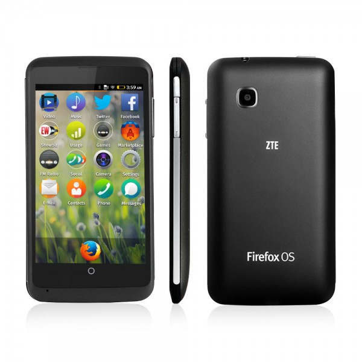

ZTE Open C 為全球首款搭載新版 Firefox OS 機種 美英德俄及多個歐洲國家買得到
Mozilla 與中興通訊 (ZTE) 共同宣佈搭載最新版 Firefox OS 的 ZTE Open C 智慧型手機今日已於美國、英國、德國、俄羅斯，及多個歐洲國家的 eBay 開賣。本款手機搭載 3MP 相機與 4 吋 WVGA 螢幕，目標客戶群將放在首次接觸智慧型手機的使用者，以及想體驗 Firefox OS 的早期採用者，並為首款搭載最新版 Firefox OS 的上市手機。

Firefox OS 智慧型手機，是第一款完全以 Web 技術所打造的裝置，同樣可提供如簡訊 (SMS)、多媒體訊息 (MMS)、音樂欣賞、應用程式、離線地圖、社交網站整合、Firefox 瀏覽器等高人氣特色，一般智慧型手機所應具備的多樣基本功能均應有盡有。
ZTE Open C 也是全球首款搭載最新版 Firefox OS 的手機，並具備多項新功能。可從鎖定畫面或通知列中直接控制音樂播放，而強化的藍牙 (Bluetooth) 分享功能可同步傳輸多個檔案。智慧收藏集 (Smart collections) 也將自動將App 或相關搜尋結果分類排列，以利使用者快速尋找。另外也強化了捲動效能並加快系統應用程式 (如行事曆、通訊錄、相機) 的啟動速度。
ZTE Open C Firefox OS 智慧型手機目前定價 99.99 美元，已可於美國、英國、德國、俄羅斯，還有許多歐洲國家的 eBay 網站上購買。為了服務全球初次接觸智慧型手機的消費者與早期採用者，Open C 不會預先安裝任何特定運營商 App 或服務，而且不會有任何使用區域的限制。
Mozilla 營運長宮力博士表示：「我們很高興看到 ZTE 能依循 ZTE Open 的成功模式，再次推出新款 Firefox OS 手機。對剛要第一次接觸智慧型手機的消費者來說，ZTE Open C 絕對能提供極佳的使用經驗。」
ZTE 行動裝置執行長曾學忠也指出：「ZTE 很高興能繼續去年的成功合作模式，與 Mozilla 以及 eBay 合作，讓全球消費者都能選購 ZTE Open C。中興通訊將繼續供應多樣的創新裝置，要以不同價格儘量滿足多樣的使用者經驗與效能。」